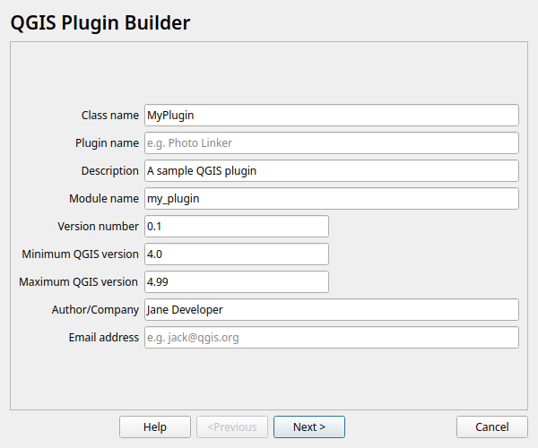
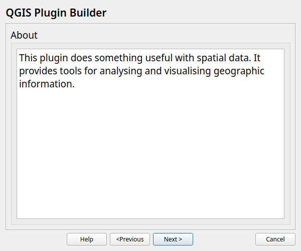
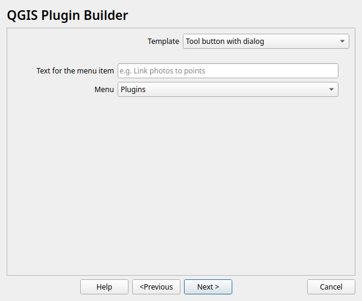
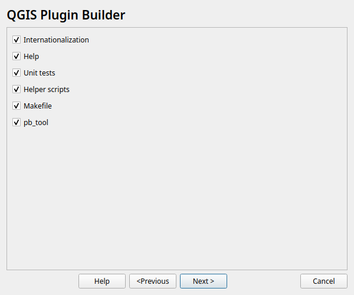
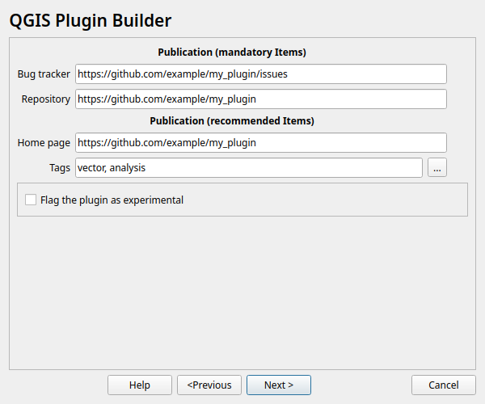
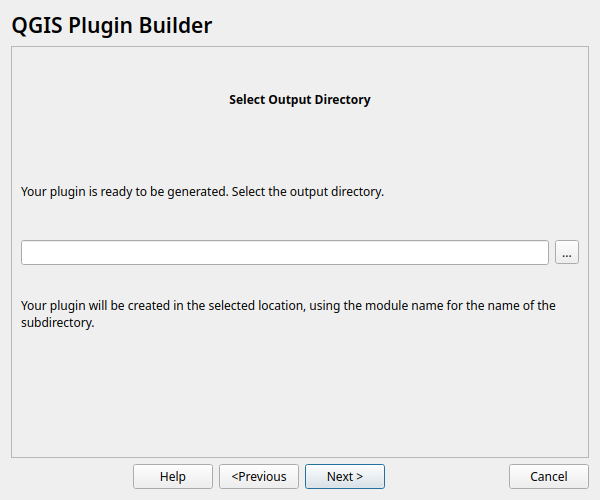

QGIS Plugin Builder¶
Concepts¶
Plugin Builder provides you a working template from which you can create your own plugin.
The steps to using Plugin Builder are fairly simple:
Open the Plugin Builder from within QGIS
Fill out the required information for the selected plugin template, working your way through each step
Designate where to store your new plugin
If automatic compilation failed during plugin generation, manually compile your resource file using rcc
Install the plugin
Test it
Running Plugin Builder¶
When you run Plugin Builder you will see a dialog with text fields. Each text field contains a hint inside it in greyed out text that will disappear when you start typing text into it. There is also a tooltip containing help information that will appear when you hover over each text field:

The descriptions give you a hint about what is required for each field. The following sections describe the required and optional parameters in greater detail.
Plugin name and required information¶
- Class name
This is the name that will be used to create the Python class for your plugin. The name should be in CamelCase with no spaces. Plugin Builder will accept an all lower case class name but this should be avoided since it isn’t in line with Python coding style. Examples of valid class names are:
MyPlugin
PluginBuilder
ScriptRunner
- Module name
This is the name that will be used to create the Python module ( file) for your plugin. The name should be in lowercase with words separated using underscores. Plugin Builder will accept any case module name but this should be avoided since it isn’t in line with Python coding style. Examples of valid module names are:
detect_features
detector
- Plugin name
This is a title for your plugin and will be displayed in the QGIS plugin manager and the plugin installer. It will also be used as the menu name that appears in the QGIS Plugin menu. You can use the Class name, or make it more readable. Some examples:
My Plugin
Plugin Builder
ScriptRunner
- Description
This is a one line description of the plugin’s function and is displayed in both the Plugin Manager and Plugin Installer. Keep it short yet descriptive so the purpose of the plugin can be easily determined.
- Version number
This is the version number of your plugin. Plugin Builder suggests 0.1, but you can start with any number. The Plugin Installer uses the version number to identify which plugins you have installed are upgradeable so it is important to increment it as you release new versions.
- Minimum QGIS version
This is the minimum version of QGIS required for your plugin to work. If your plugin uses features only present in a newer version, be sure to set this field accordingly to prevent problems for those running older versions. Plugin Builder defaults this field to 4.0.
- Author/Company
Put your name or company name here—this information is used in writing the copyright statement in the source files of your plugin, as well as being displayed in the Plugin Installer and on the QGIS plugin repository.
- Email address
Put an address where users of your plugin can contact you. This information is written to the copyright header of your source files and also displayed on the QGIS plugin repository listing for your plugin.
About¶

- About
This is a long line description of the plugin’s function (purpose, function, requirements, etc.).
This field is required.
Template specific parameters¶

- Template
Choose which type of plugin you want to create.
There are currently three templates available:
Tool button with dialog
Tool button with dock widget
Processing provider
For the default template “Tool button with dialog” you get the following parameter fields:
- Text for the menu item
This is the text that will appear in the menu. In the example below, the plugin name is Frog Pond and the text for the menu item is displayed to the right of it:

In general you shouldn’t use the same text for the plugin name and the menu item; if you do your menu will look like this:

- Menu
Choose an appropriate location for your plugin’s menu based on its main functionality. This will place your menu under one of the following main menus:
Plugins
Database
Raster
Vector
Web
If none of the specific categories apply (Database, Raster, Vector, Web), choose Plugins. Your choice is also written to the category field in metadata.txt.
Additional components¶
The Plugin Builder addes several additional components to your plugin, which are recommended, but not strictly required.

- Internationalization
A stub for adding translated texts to your plugin.
- Help
Creates a Sphinx template for generating a HTML help. See Documenting your Plugin for more information.
- Unit tests
Creates a basic set of unit tests for your plugin.
- Helper scripts
Adds a helper script for publishing your plugin on http://plugins.qgis.org/ and additional scripts for internationalization and testing.
- Makefile
Adds a Makefile for building your plugin with GNU make. See Using the Makefile for more information.
- pb_tool
Genrates a configuration for pb_tool, a Python command line tool for compiling and deploying QGIS plugins on Linux, Mac OS X, and Windows.
It is strongly recommended that you use
pb_toolrather thanmakefor building and deploying your plugins.See Using pb_tool for more information.
Publication information¶
There are several fields that you should seriously consider completing when publishing a new plugin. This will help ensure your plugin is accepted and users can be successful using it.

- Bug tracker
A URL pointing to the bug/issue tracker for your plugin. You can create a project with issue tracking for your plugin(s) at GitHub or GitLab.
- Home page
The URL of the home page for your plugin. This can be the same as the project page you create on github.com, gitlab.com, or a site of your own.
- Repository
The URL of the source code repository for your plugin. This allows others submit patches and improvements for your approval, as well as providing you with the benefit of source code control. Consider using GitHub or GitLab to store your code.
- Tags
Tags are a comma separated list of keywords describing the function(s) of your plugin. You can enter your own or select from a list of tags by clicking the button to the right of the “Tags” field.
You can create a customized list of tags to use instead of the standard set by creating a plain text file named .plugin_tags.txt in your home directory. The file should contain a single tag per line. For example:
composer csv database
- Experimental
Check this box if your plugin is considered experimental, meaning it is either incomplete or may cause unintended consequences. This allows users to filter out experimental plugins in the Plugin Installer if they choose not to live on the bleeding edge.
Generating¶

Choose the location for your generated plugin. Once you select the directory, the complete path for your plugin is displayed.
When you click Generate, Plugin Builder will attempt to build your resources.py file using rcc.
If rcc is not found in your path, you’ll see:

If the compilation fails, you’ll have to compile it manually as shown in the results dialog.
Results¶
Once generated, Plugin Builder displays the results:

The results dialog tells you where your plugin was saved, the location of your
QGIS plugin directory, and what to do next. This same information is contained
in the README.html and README.txt files in your generated plugin
directory.
Compiling the resource file¶
The resource file contains definitions of media used in your plugin. Upon generation, this contains one entry for icon.png, the icon file for the plugin.
The resource file needs to be compiled before it is functional in QGIS.
Plugin Builder attempts to compile it for you during generation, but if that fails (i.e. rcc isn’t found), you’ll
have to do it manually.
To compile the resource file into Python code, use the rcc utility
that comes as part of your Qt installation:
rcc -g python resources.qrc -o resources.py
Once the resource file is compiled, the generated plugin can be loaded in QGIS.
Deploying¶
To deploy your new plugin during development, you have two choices:
Copy the entire plugin directory to your QGIS plugins directory
Use the
QGIS_PLUGINPATHenvironment variable to point to the directory where your development plugin(s) are located
The Copy Method¶
To deploy in this fashion, simply copy your plugin directory to the location of your QGIS plugins. By platform, this location is found in your home directory under:
- Linux:
.local/share/QGIS/QGIS4/profiles/default/python/plugins
- Mac OS X:
Library/Application Support/QGIS/QGIS4/profiles/default/python/plugins
- Windows:
AppData\Roaming\QGIS\QGIS4\profiles\default\python\plugins
Since each plugin must be contained in its own subdirectory, make sure you copy the directory, not the files in the directory.
Using pb_tool will automatically detect the proper location to place your plugin when you use:
pb_tool deploy
If your operating system supports GNU make, you can use the deploy target of the Makefile in your plugin directory:
make deploy
The Environment Variable Method¶
Using the QGIS_PLUGINPATH environment variable you can tell QGIS to look
in an additional location for plugins. This can be handy for development,
allowing you to test your plugin without copying it to
.local/share/QGIS/QGIS4/profiles/default/python/plugins.
To use this method, set the QGIS_PLUGINPATH environment variable to point
to your development directory before starting QGIS. When QGIS starts up, all
the directories in QGIS_PLUGINPATH will be searched and those
containing valid plugins will be added to the Plugin Manager.
Testing¶
With your new plugin deployed, start up QGIS, open the Plugin Manager, and enable it. Then click on the tool or the menu item for the plugin to run it. If all is well, you should see something similar to this:

If the plugin throws an error make sure you have compiled the resource file before deploying and testing.
Once the generated plugin is working it’s your turn to customize the user interface and add the needed code to make it do something useful.
Using pb_tool¶
pb_tool is a Python command line tool for compiling and deploying QGIS plugins on Linux, Mac OS X, and Windows.
Features¶
pb_tool provides commands to aid in developing, testing, and deploying a QGIS Python Plugin:
Compile resource and UI files
Deploy to your plugins directory for testing in QGIS
Create a zip file for upload to a repository
Clean both compiled and deployed files
Build and clean documentation
Build translation files
Works on Windows, OS X, and Linux
Installation¶
You can install the tool using pip:
pip install pb_tool
To upgrade to the latest version, use:
pip install –upgrade pb_tool
Usage¶
pb_tool requires a configuration file in order to do anything. Plugin Builder creates a working configuration file for you. By default,
pb_tool assumes a file name of pb_tool.cfg, although you can specify a
different one using the --config options in most commands.
To display the available commands, just enter pb_tool on the command line:
$ pb_tool
Usage: pb_tool [OPTIONS] COMMAND [ARGS]...
Simple Python tool to compile and deploy a QGIS plugin. For help on a
command use --help after the command: pb_tool deploy --help.
pb_tool requires a configuration file (default: pb_tool.cfg) that declares
the files and resources used in your plugin. Plugin Builder creates
a config file when you generate a new plugin template.
See http://jonah-sullivan.github.io/plugin_build_tool for for an example config
file. You can also use the create command to generate a best-guess config
file for an existing project, then tweak as needed.
Options:
--help Show this message and exit.
Commands:
clean Remove compiled resource and ui files
clean_docs Remove the built HTML help files from the...
compile Compile the resource and ui files
create Create a config file based on source files in...
dclean Remove the deployed plugin from the...
deploy Deploy the plugin to QGIS plugin directory...
doc Build HTML version of the help files using...
list List the contents of the configuration file
translate Build translations using lrelease.
validate Check the pb_tool.cfg file for mandatory...
version Return the version of pb_tool and exit
zip Package the plugin into a zip file suitable...
For more information on using pb_tool, see: https://jonah-sullivan.github.io/plugin_build_tool
Using the Makefile¶
Note
The Makefile is provided for legacy compatibility. pb_tool is the
recommended way to compile and deploy your plugin.
The Makefile can be used to compile and deploy your plugin on systems that support GNU make.
Documenting your Plugin¶
Plugin Builder optionally creates a Sphinx project for you in
the help subdirectory of your plugin. To build the documentation you will
need to install Sphinx using pip.
Once installed, you can build the documentation using make doc
or change to the help subdirectory and use make html
(this works on any platform).
Sphinx supports building other formats, including latex, text, qthelp, and epub.
Of course you need to actually write something to document your plugin by
editing help/source/index.rst.
Once your documentation is complete you can distribute it with your plugin,
as well as publishing it on a website. You can also add a Help button to the
button box group on the dialog and connect it to a method to show your help
file in the user’s default web browser. See the code in pluginbuilder.py
for an example.
For an example of writing your documentation using Sphinx, you can view the source of this document.
The Repository¶
When your plugin is ready to be shared with the QGIS community, upload it to the QGIS plugin repository at http://plugins.qgis.org/plugins. Make sure to package it properly in zip format and test the zip before adding it to the repository.
When you add it to the repository, your plugin will show up in the Plugin Installer in QGIS, making it available for download and install by the community.